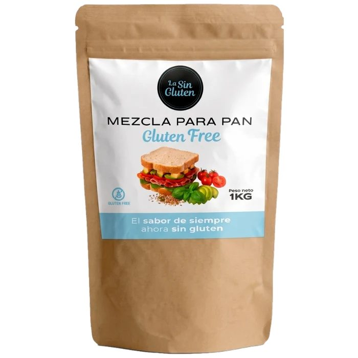

Nuestro blog
Nutrición, ciencia y las historias detrás de nuestros productos.
 Nuestros productos · Octubre 2026The Original Protein Bread: un pan con índice glucémico 24Un estudio de la Universidad de Sídney midió el índice glucémico de nuestro pan insignia: 24, dentro de la categoría de IG bajo. Te contamos qué significa.
Nuestros productos · Octubre 2026The Original Protein Bread: un pan con índice glucémico 24Un estudio de la Universidad de Sídney midió el índice glucémico de nuestro pan insignia: 24, dentro de la categoría de IG bajo. Te contamos qué significa. Nutrición · Octubre 2026Índice glucémico: qué es y cómo tenerlo en cuenta en tu día a díaNo todos los hidratos de carbono suben la glucosa igual ni a la misma velocidad. El índice glucémico lo mide, y con unos pocos cambios puedes aprovecharlo.
Nutrición · Octubre 2026Índice glucémico: qué es y cómo tenerlo en cuenta en tu día a díaNo todos los hidratos de carbono suben la glucosa igual ni a la misma velocidad. El índice glucémico lo mide, y con unos pocos cambios puedes aprovecharlo. Nutrición · Octubre 2026Proteína: cuánta necesitas y cómo repartirla a lo largo del díaLa proteína es el material de construcción del cuerpo. Te contamos cuánta recomienda la EFSA y por qué conviene repartirla entre desayuno, comida y cena.
Nutrición · Octubre 2026Proteína: cuánta necesitas y cómo repartirla a lo largo del díaLa proteína es el material de construcción del cuerpo. Te contamos cuánta recomienda la EFSA y por qué conviene repartirla entre desayuno, comida y cena. Nutrición · Octubre 2026Fibra: el nutriente que casi nadie alcanzaLa EFSA recomienda al menos 25 g de fibra al día, y en Europa la mayoría nos quedamos cortos. Qué hace la fibra y cómo sumar más sin cambiar tus hábitos.Nuestra historia · Octubre 2026Pan y control de peso: la historia del Dr. Pape y nuestro pan de proteínasUn médico alemán especialista en nutrición y obesidad quiso que sus pacientes no tuvieran que renunciar al pan. Así nació la receta de The Original Protein Bread.
Nutrición · Octubre 2026Fibra: el nutriente que casi nadie alcanzaLa EFSA recomienda al menos 25 g de fibra al día, y en Europa la mayoría nos quedamos cortos. Qué hace la fibra y cómo sumar más sin cambiar tus hábitos.Nuestra historia · Octubre 2026Pan y control de peso: la historia del Dr. Pape y nuestro pan de proteínasUn médico alemán especialista en nutrición y obesidad quiso que sus pacientes no tuvieran que renunciar al pan. Así nació la receta de The Original Protein Bread.
Sin gluten · Octubre 2026Celiaquía: qué es y cuántas personas conviven con ellaAlrededor del 1 % de la población es celíaca, y la mayoría aún no lo sabe. Qué es la celiaquía, qué dicen las cifras en España y cómo es comer sin gluten en casa.